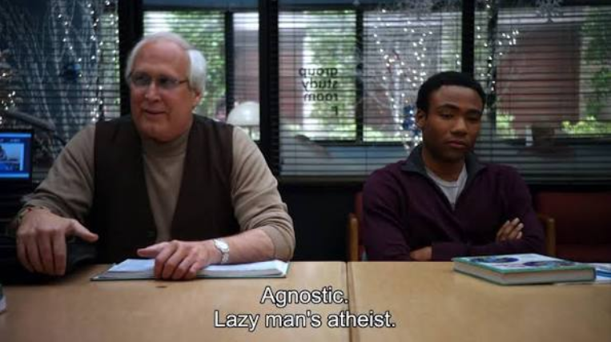
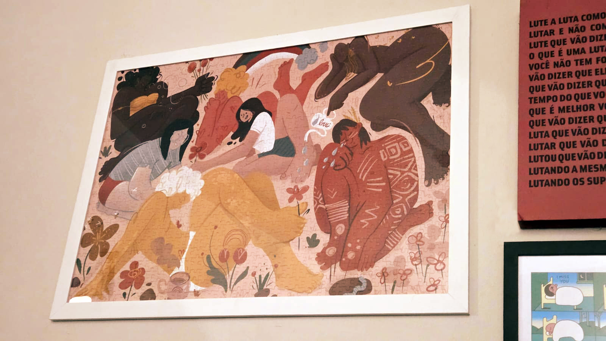
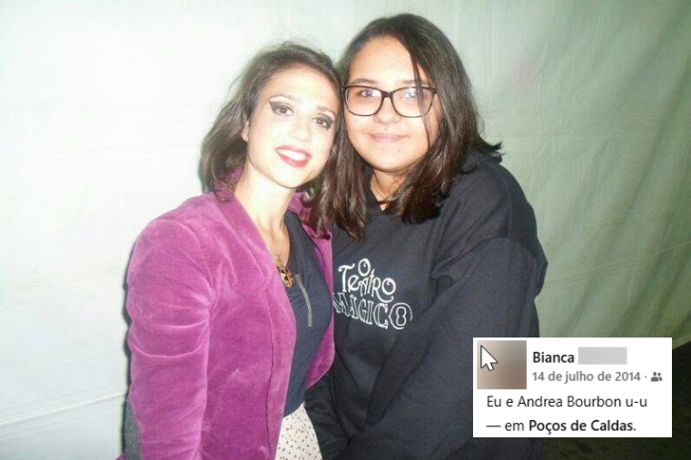

dez curiosidades
esse post faz parte de uma seleção de temas do entreblogs, um grupo de blogagem coletiva muito massa criado pensando em compartilhar nossas perspectivas sobre os mesmos assuntos. gostou da ideia? dá uma olhada no site da ba moretti que ela explica melhor sobre o grupo.
achei o tema "dez curiosidades sobre mim" perfeito pra um primeiro post:
#1 eu passei a maior parte da minha infância e adolescência em uma seita. não é tão interessante quanto parece pela premissa, era só uma igreja evangélica com controle demais dos frequentadores. durante todo o tempo que eu e minha família frequentamos, inclusive, sequer tínhamos a noção de que era uma seita. quando saímos de lá (por motivos não relacionados) começamos a compartilhar com um amigo da família sobre as histórias que vivemos e ele nos deu a notícia que ninguém queria dar, nos avisando, enquanto comíamos caldo de mandioca, que estávamos numa seita.
#2 ainda meio dentro desse mesmo tópico, eu fui religiosa até cerca de uns 18~20 anos de idade. eu era tão religiosa que, aos 18 anos, fui pra um intercâmbio da igreja trabalhar pra uma igreja em londres por três meses. hoje, não sigo mais religião nenhuma e me considero agnóstica (?)

tô viciada nessa série#3 eu sou doida pra fazer aulas de circo de uma forma mais definitiva. tenho vontade de fazer acrobacias aéreas e até já fiz algumas aulas experimentais
#4 não terminei minha faculdade até hoje. fiz marketing até quase terminar o curso, mas no finalzinho resolvi trocar pra análise e desenvolvimento de sistemas. é o curso que tô fazendo até agora, mas ainda vai demorar mais um pouco pra formar.
#5 quando eu era criança, enfiei o dedo na tomada no leroy merlin. não lembro quais foram as consequências e não toquei no assunto ainda com minha mãe pra descobrir
#6 sempre tive muito contato com a cena de pilotos de paraglider de bh, porque meu padrasto voa de paraglider desde que eu era criancinha.
#7 montei meu primeiro quebra cabeça grande de adulto aos 23 anos. ficou lindo e eu tenho ele emoldurado aqui do lado do meu computador.

meu quebra-cabeça emoldurado#8 eu tive um podcast (!) com minha melhor amiga, a bruna, quando tínhamos 17~18 anos. estávamos nessa aventura de nos entendermos como pessoas e adorávamos falar sobre isso. chamava "pés na vida (e no mundo)". durou alguns meses, mas depois de um tempo, mudamos demais, a vida adulta começou a pegar e suspendemos o projeto. vez ou outra a gente ainda traz essa ideia de volta, mas nunca mais demos andamento. quando olho em retrospecto, sinto que nosso erro foi nos levar a sério demais. fizemos amigos que perduram até hoje nessa época. foi muito divertido
#9 a minha banda preferida é o teatro mágico e acho que todo mundo que me conhece sabe disso a essa altura. devo ter ido em uns 7 shows até hoje, toda vez que tenho a oportunidade vou de novo. tem toda uma tangente sobre ter sido a primeira banda que eu descobri e comecei a gostar sozinha e a minha busca por uma identidade própria, mas eu não vou entrar nela aqui.

foto minha há doze anos atrás, em 2014, com a andrea barbour, dançarina do teatro mágico. na época eu não sabia escrever o nome dela, como você pode ver pela legenda do post.#10 essa é um mico, mas até hoje eu não sei diferenciar os porquês sem pesquisar. talvez deixar isso público me faça criar a vergonha necessária pra aprender!!!
agora, vamo trocar: me conta vc uma curiosidade sua 🫵
← voltar pro blog
comentários
ninguém comentou nada ainda. quer me falar o que vc achou?
não foi possível carregar os comentários agora.